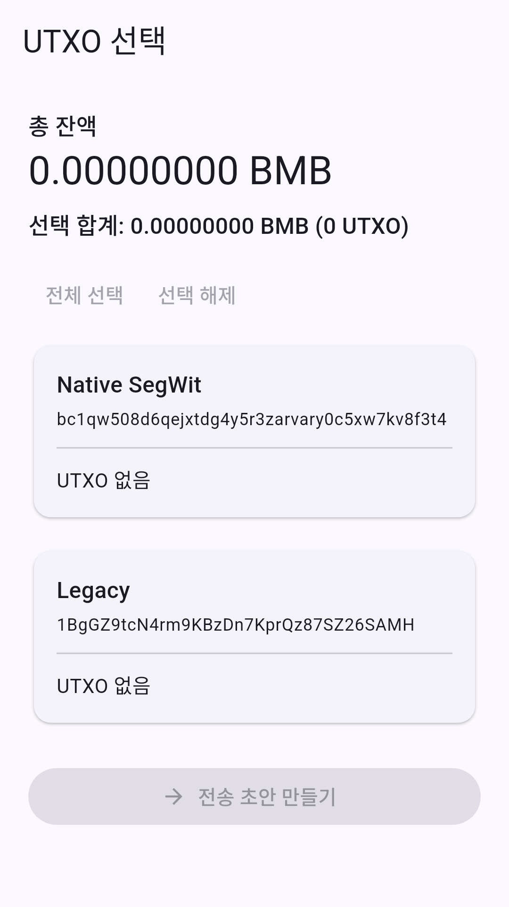
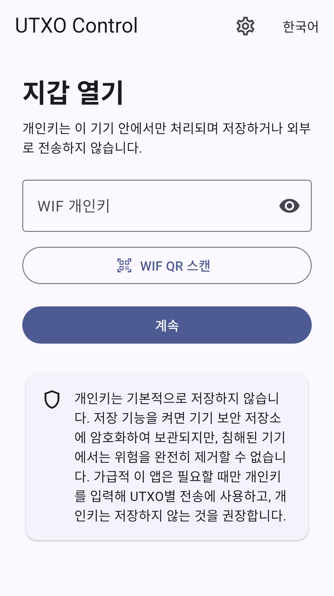

Keep your private key safe
The current version uses the private key in session memory and does not store it persistently. The app cannot recover a lost key.
ALYAK / RUNBICKERS · ANDROID APP
Choose which coins to spend
and what to leave untouched.
View, select and send your BTCMobick UTXOs.
Preparing for Google Play · Available after approval As of October 15, 2026

Actual app screen · Empty demo wallet
WHY UTXO CONTROL
A wallet balance can consist of several unspent outputs, known as UTXOs.
UTXO Control focuses on letting you choose the outputs used in a transfer and review the amount and fee. It helps BTCMobick users understand and control their transactions.
Build a transaction with A + C.
Leave B unselected.
A SMALL GUIDE
Never enter a private key on this website.
Open wallets and make transfers only inside the installed app.
Enter the WIF private key of a wallet you control, or scan its QR code in the app. Never share the key. Keep the original safely backed up.
Review your balance and UTXOs, then select the outputs to spend. You can view balances for Legacy and Native SegWit addresses.
Enter or scan the receiving address and set the amount. Check the address, selected outputs, amount and fee again on the final review screen.
Confirm with your PIN or configured biometrics. The transaction is signed on your device, then broadcast to the network. Use its transaction ID (TXID) to check the status.

YOUR KEYS. YOUR RESPONSIBILITY.
UTXO Control is not a custodial service. Review the following before sending a transaction.
The current version uses the private key in session memory and does not store it persistently. The app cannot recover a lost key.
Check the destination, network, amount and fee. Broadcast transactions are difficult to reverse. Start with a small test amount.
A transaction ID does not mean a transaction has been confirmed in a block. Check its status and confirmation count.
GOOD TO KNOW
It is built for BTCMobick. Do not assume it supports other networks. Similar-looking addresses do not guarantee network compatibility.
Signing takes place on your device. The app is designed not to send the private key itself to the lookup server. Balance queries and transaction broadcasting use external network services, which may receive address-related queries and your IP address. See the privacy policy for details.
No separate service account is required. The app PIN is a local wallet lock, not an account password. Leaving the app during a transfer locks the screen and requires authentication when you return. This website contains no wallet connection, private-key entry, payment form or analytics scripts.
Yes. The app source is available on GitHub under the MIT license. Report bugs and suggest improvements through GitHub Issues. Never include private keys, recovery phrases or personal information.